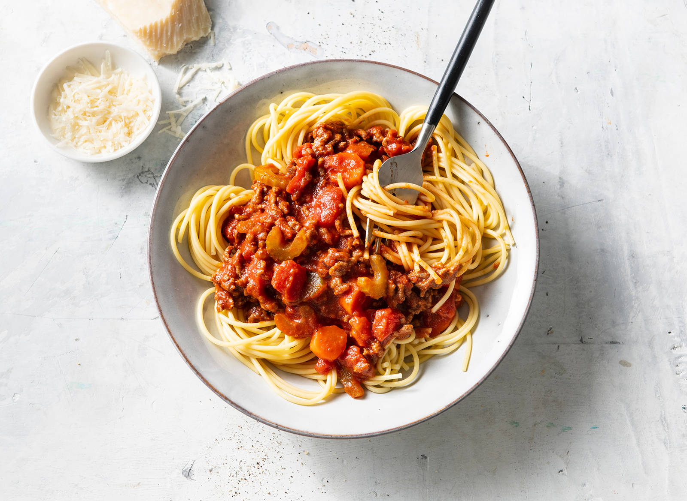

Spaghetti bolognaise

Ingrediënten
- 1 ui
- 1 stengel bleekselderij
- 1 ui
- 2 eetlepels olijfolie
- 250 gram winterpeen
- 25 gram ongezouten roomboter
- 1 eetlepel tomatenpuree
- 500 gram gehakt
- 90 ml runderbouillon
- 800 gram tomatenblokjes
- 300 gram spaghetti
Bereiding
- Snipper de ui. Schil de winterpeen en snijd in plakjes. Snijd de bleekselderij in boogjes. Verhit de olie
met de boter in een pan, voeg de ui, peen en bleekselderij toe en bak 5 min. op middelhoog vuur. Voeg de
tomatenpuree en het gehakt toe en bak in 5 min
- Voeg de bouillon en tomatenblokjes erdoor. Breng op smaak met peper en eventueel zout. Breng aan de kook en
laat de saus met de deksel op de pan 30 min. op laag vuur sudderen. Roer af en toe.
- Kook ondertussen de spaghetti volgens de aanwijzingen op de verpakking. Verdeel de spaghetti over de borden
en schep de saus erover.